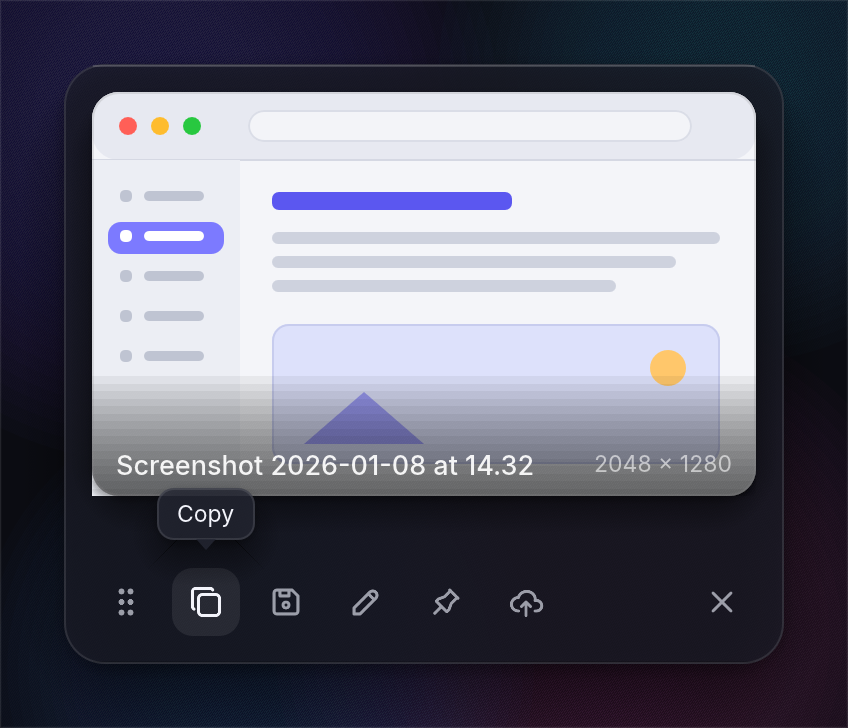
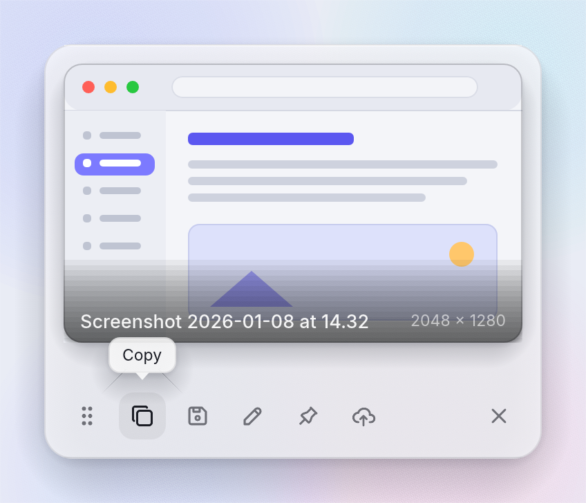

quick_dark.png
quick_light.png
menu_dark.png
annotate_dark.png
liquidglass_over_content.png
vibrancy_over_content.png
transparency_proof.png7 surfaces · real running windows captured on macOS 26 · Tabler icons (MIT) · custom theme

quick_dark.png
quick_light.pngmenu_dark.pngannotate_dark.pngliquidglass_over_content.pngvibrancy_over_content.pngtransparency_proof.png